Horóscopo
Doce signos, doce maneras de estar en el mundo. Poné tu fecha de nacimiento y llevate la tuya.

Horóscopo
Cultura · Actualidad
Para gente real
Doce signos, doce maneras de estar en el mundo. Poné tu fecha de nacimiento y llevate la tuya.